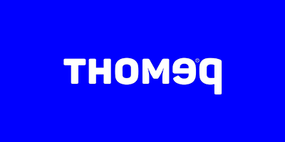
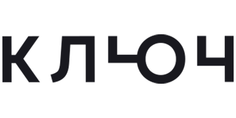
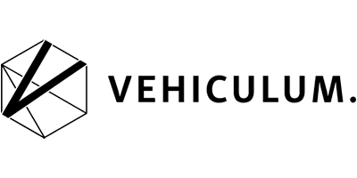
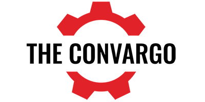

Money
Oskar Hartmann is one of the most successful Russian entrepreneurs who is a vivid example of how ambitious goals can be achieved from scratch. To date, Hartmann is the founder of more than 10 companies with a total capitalization of more than 5 billion US dollars. However, the big money did not turn Oskar’s head. «I spend money on emotions. To feel good and not feel bad» — that’s how Hartmann treats his capital.
Together with entrepreneur and philanthropist Igor Rybakov, Oskar launched the World Entrepreneurship Leadership Foundation (WELF). It is a foundation for leadership programs to support entrepreneurs around the world, a non-profit organization that aims to rally philanthropists and develop leadership programs.
Hartmann prefers to invest most of his funds in active instruments — shares of promising companies. It is for this reason that he took up venture capital investing, putting money in new IT startups. Oskar Larix Venture Fund (founded jointly with Igor Rybakov) The Fund has assets worth $100 million. Its portfolio now includes many companies:
- 
- 
- 
- 
The entrepreneur is not going to slow down and goes on investing actively, expanding his business empire.